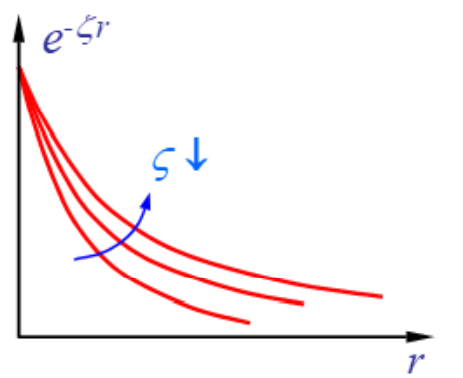
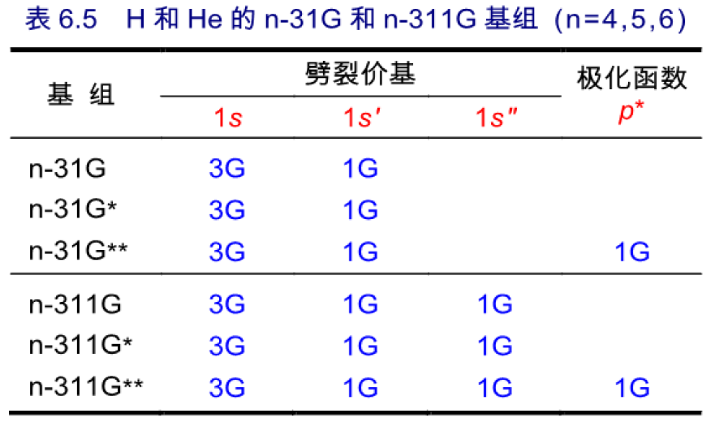

- 从头算中，采取了LCAO-MO近似，即通过对原子轨道进行线性叠加来构造分子轨道：
- 由原子的Hatree-Fock方程得到的原子轨道AO为数值解析的函数，因此需要通过解析函数来拟合：
- 以基函数为基的Roothaan方程：
- 基函数集基本要求：
- 分子积分容易计算，且速度快；
- 在较小的基组维界下即可逼近数学完备集的理论极限精度（MO的展开具有高的收敛性）
- 做SCF时，每迭代一次就系数就会改变一次，不断调整求解。
- 基函数只有数学意义，函数越多结果越精确，但也取决于怎么合理地设基函数。（基函数数学形式很好，几个就行，基函数数学很烂，很多展开也不好）。
- 当基函数无穷多，成为完备集，就达到了完备基组极限(Complete basis set limmit,CBS)，能够完美展开分子轨道。从基组角度来说没有误差，误差来源于理论方法。
- 实际用的基组尺寸是有限的而达不到CBS，由此导致的计算结果的误差称为基组不完备性误差。
部分
中心势场型AO基组
- 对单电子原子的薛定谔方程进行求解，通过球坐标的变换和使用变量分离法，得到，其中球谐部分与势能无关。
- 对于多电子体系，其他电子对第i个电子的排斥看为对核电荷的屏蔽，即引入屏蔽常数σ。与势能的径向部分写为，即得到
- n主量子数：1, 2, …
- l角量子数：0, 1, 2, …, n-1（s、p、d、f……）
- m磁量子数：0,±1, …,±l
复AO和实AO
- 分为复型（连属Legendre多项式）和实型。
例子：
具有球对称性，无方向性，物理学家更关心。
具有立方对称性，化学家更关心化学键中原子的位置和方向，所以降低其对称性，引入了x，y，z方向。
特点：
- 复AO无方向性；AO与共价键方向性相联系
- 原子计算用复AO基，分子计算用实AO基
- 复AO基与实AO基可以通过欧拉公式，线性组合相互转换：
- 不同AO基的角度部分均固定不变，基函数的选择实际上是选取合适的形式
部分
类氢原子轨道的径向函数为连属Laguerre多项式的形式：，展开为：
- 最高次项取到n-l-1，这样符合解薛定谔方程的量子数。
- 函数中，n-l-1次多项式有n-l个极值点和n-l-1个节点，积分非常困难（时正时负），不便用于分子积分计算。
例子：氢原子的2s和sp连属Laguerre多项式
径向分布函数：
Slater-Type Orbital（STO）
Slater提出一种无节点型的简化径向函数
- 实际上是截取了类氢AO的最高次项，
- 数值仅仅与和（Slater screening constant）有关，即，而与无关，取决于屏蔽效应
- Rn无节点，因此函数集归一化但相互不正交：
- 和组合构成的基函数集通称“Slater型轨道”（STO），属于非正交的AO基集。但是其实严格来说不是一个轨道，只是一个函数拟合的轨道，严格的简称STF。
的优化
- 这一方法取决于的精度。但是与分子有关，即随体系变化。
- 先通过对个元素原子的SCF计算，对初步优化，再在分子环境下进行的再优化。
- 对大量的中、小分子的“最优“进行平均，定义出“标准”，Gaussain和大多数软件的默认值都是标准
AO基组的大小等级
极小基Minimal basis sets（MBS）
- 原子的每个AO只对应一个基函数。也称为“单基组”，即SZ。因为基函数太少，不足以充分表现价层原子轨道在实际分子环境中的变形，如今已基本无人使用。
- ，包含芯基组和价基组
- 精度比较低。
价基组Valence basis sets（VBS）
- 去除极小基中的“芯基组”，只留下价基组
- 用于半经验和低级的价电子从头算
扩展基组（EBS）
- 原子轨道由多个基函数描述，向极小基中增加基函数，进一步逼近完备集。
- 增大变分空间，计算精度得以改善
常见的STO扩展基组形式
nζ基组
- 双ζ基组，DZ：每个AO对应2个n相同，但ζ不同的STO（ζ’<ζ’）
- 也有TZ，QZ等。
含极化函数的基组
- 向DZ基加入比价AO角量子数更高的基函数以利于描述原子成键后的电子云极化变形。（ADF中描述位nZ2P，2P表示两个极化函数。）
- 例子：比如为了描述H原子1s轨道成键的方向性，加入2p型极化函数。2p轨道就加入3d轨道，3d加入f轨道。
含弥散函数的基组
- 分子的负离子因电子过量使电子云弥散度增加，向极化基组中添加小的ζ弥散函数使物理图像能正确反映。比如分子间弱相互作用（范德华力、氢键）体系或过渡态、激发态的计算通常也需要添加弥散函数。
- ζ越小，r增大时，衰减的速度越慢，因此加入小ζ的STO有利于对原子核区域的电子运动的描述。

STO基组的优缺点和用途
- 优点：与真实原子分子轨道的径向电子分布特性确实比较靠近，因为是从类氢原子推出来的。
- 缺点：计算三、四中心双电子积分困难。
- 因为在球坐标下的展开为，是收敛很慢的无穷级数。（为l阶Legendre多项式）
- 另外，中的，积分困难，变量难以分离
- 用途：
- 主要用于半经验 MO 计算，因为把很多积分都忽略了。
- 在从头计算中可用于原子和双原子分子的计算，很少用于比 CH4 更大的分子。
- 近年来在密度泛函理论（DFT）中使用逐渐增多。DFT 中很多矩阵元都无法用解析函数表达，只能用数值积分，所以就不需要更复杂的基函数，直接用 Slater 基函数或者数值基组。比如ADF程序。
高斯型基函数（GTO）
- Boys于1950年提出用归一化 Gaussian 函数作为径向函数：
- 与组合称为Gaussian-type atomic orbitals，简称GTO。
- 球极坐标：，球谐型高斯函数与实型原子轨道角度部分行为一致，通过调整收缩系数调整径向行为，就可以一一对应地近似描述实型原子轨道。
- 直角坐标/笛卡尔型：，
- ：归一化系数
- α：高斯函数指数（决定收敛快慢，越大收敛越快）
- r：距离原子核的距离，x，y，z也是r的笛卡尔分量
- L、M、N：决定了GTO的类型，是AO的角量子数。
GTO的标记
- O是原点，A、B为原子，原子A的坐标为：
- 电子的坐标为，
- 原子A上的GTO为：
GTO的特点
- 中心位于各个原子核，径向无节点
- 函数值的指数衰减比STO快得多，两者的指数上面分别是和
- 变量可分离：
位于 A、B 两中心上的两个 GTO 乘积可向广义质心作单中心展开：
其中，即杠杆定理。比如4)（杠杆定理），两个高斯函数的乘积可转化为另一个中心上的高斯函数的加和，因此四中心积分可转化为双中心积分，进而转化为单中心积分。使积分的计算加快。而各种积分都是两个函数的乘积的形式，从而大大简化各种积分运算。
GTO径向函数相比于STO，除了e指数上的变化以外，变成了。则GTO不含主量子数n。n对各壳层的影响仅体现在α的大小上，即n越大，α越小。
由，则：
从头算中使用的高斯型函数
因为没有主量子数n，而每个壳层中的基函数的收缩系数、GTF指数都是相同的，故实际基组在定义的时候都是按壳层来定义的。即角动量l相同的为一个壳层。直接分为：
- s型基函数：
- p型基函数：，，
- d型基函数：，，，，，
- 但是这6个并不是完全独立的，因为
- 这些笛卡尔型GTF可以线性组合，使角度部分行为与球谐型GTF一致（尽管组合后的函数形式与球谐型仍不同），以用于合理描述原子轨道。前三个可以写成为：，，。而其中最后一项基函数,一般不用，它是一个特殊的球型GTF轨道，在某个径向距离（取决于指数）附近函数值较大，而接近GTF的中心和远离GTF时都很小。
- 因此，，，，，构成了5个d型球谐基函数。
- 对于笛卡尔型GTO：
| l | Type | L | M | N | l | Type | L | M | N |
|---|---|---|---|---|---|---|---|---|---|
| 0(S) | S | 0 | 0 | 0 | 3(F) | XXX | 3 | 0 | 0 |
| 1(P) | X | 1 | 0 | 0 | 3(F) | YYY | 0 | 3 | 0 |
| 1(P) | Y | 0 | 1 | 0 | 3(F) | ZZZ | 0 | 0 | 3 |
| 1(P) | Z | 0 | 0 | 1 | 3(F) | XXY | 2 | 1 | 0 |
| 2(D) | XX | 2 | 0 | 0 | 3(F) | XXZ | 2 | 0 | 1 |
| 2(D) | YY | 0 | 2 | 0 | 3(F) | YYZ | 0 | 2 | 1 |
| 2(D) | ZZ | 0 | 0 | 2 | 3(F) | XYY | 1 | 2 | 0 |
| 2(D) | XY | 1 | 1 | 0 | 3(F) | XZZ | 1 | 0 | 2 |
| 2(D) | XZ | 1 | 0 | 1 | 3(F) | YZZ | 0 | 1 | 2 |
| 2(D) | YZ | 0 | 1 | 1 | 3(F) | XYZ | 1 | 1 | 1 |
- G壳层【15种】：ZZZZ YZZZ YYZZ YYYZ YYYY XZZZ XYZZ XYYZ XYYY XXZZ XXYZ XXYY XXXZ XXXY XXXX
… - 实际计算时，对于角动量高于D的笛卡尔型基函数，一般把它们转化成球谐型高斯基函数再用，比如10个f也可以转换为7个f球谐型高斯基函数。这可以节约耗时和避免数值问题。并且与原子轨道特点相同。
GTO和STO的比较
- 电子运动图像描述，STO更好。（GTO在原子核处抹去了尖峰，在离核远处衰减得太快）
- 分子积分计算处理，GTO更好。STO双电子积分计算困难，不好直接去用它作为量子化学计算用的基函数。
- 为了弥补GTO物理图像的缺陷，可以增大基函数的数目。
- 例子：10s6p-GTO用于B~Ne的计算，与双ζ-STO精度相似。
- 而GTO中的基函数总数为：10+6×3=28。STO中的基函数总数为：2+(1+3)×2=10
- (ij|kl)积分∝n4，因此采用GTO使得积分总数增大了2.84=62倍，但是计算一个GTO积分比STO快3-4个数量级。
- 例子：10s6p-GTO用于B~Ne的计算，与双ζ-STO精度相似。
高斯基组的分类
原始GTO（PGTO）
Primitive GTO直接采用单个归一化GTO作为基函数：
- 积分计算可行，GTF如果用得很少结果比较差，如果直接用大量的GTF作为基函数，（ij|kl）总数和F、H、S、D等矩阵维数，需要求解的系数太多，计算量太大，乃至内、外存占用剧烈增大。SCF计算时间随基函数数量n的增大而呈n3量级增加。
- 因此PGTO一般只用于原子及仅含3~5个原子的小分子计算。
收缩GTO（CGTO）
- 每个CGTO是若干个原始GTO固定比例的线性组合，其合适比例由原子从头计算确定。
- GTO set：，CGTO set：，
- 收缩使MO变分线性空间维数减小，视收缩度不同而计算精度略有下降。若收缩方案合理则影响不大。
例子：
- ()表示原始GTF，[]表示收缩GTF。但是(9d5p)/[3s2p]上有表达不清楚的地方，所以也有612，41的写法。
收缩方式
Segemented Contracted
- 给定的PGTO只出现在一个CGTO中，比如STO-ng、6-31G*、Dunning DZ等基组。每个原子轨道用单独一组函数来拟合，1s, 2s, 2p等轨道的各自 的基函数都是完全分开的 ，没有关联，每 一个 shell 各自用不同 的 GTO 来表示。不共享任何指数。 程序简单，浪费计算量。
例子：
1
2
3
4
5
6
7
8
9
10
11
12
13
14
15
16
17# O的SV基组：(7s,4p)/[3s,2p]或(511/31)
O S
2266.1767785 -0.53431809926D-02
340.87010191 -0.39890039230D-01
77.363135167 -0.17853911985
21.479644940 -0.46427684959
6.6589433124 -0.44309745172
O S
0.80975975668 1.0000000
O S
0.25530772234 1.0000000
O P
17.721504317 0.43394573193D-01
3.8635505440 0.23094120765
1.0480920883 0.51375311064
O P
0.27641544411 1.0000000
General Contacted
- 给定的PGTO可以出现在多个CGTO中，比如ANO等。1s, 2s, 3s 等用同一组幂指数 α 只是组合系数在变。 效率高，但基组复杂，写程序困难。
例子：
1
2
3
4
5
6
7
8
9
10
11
12
13
14
15
16#H的ANO-RCC-VTZP： (8s,4p)/[3s,2p]
H S
188.61445 .00096385 -.0013119 .00242240
28.276596 .00749196 -.0103451 .02033817
6.4248300 .03759541 -.0504953 .08963935
1.8150410 .14339498 -.2073855 .44229071
.59106300 .34863630 -.4350885 .57571439
.21214900 .43829736 -.0247297 -.9802890
.07989100 .16510661 .32252599 -.6721538
.02796200 .02102287 .70727538 1.1417685
H P
2.3050000 .11279019 -.2108688
.80675000 .41850753 -.5943796
.28236200 .47000773 .08968888
.09882700 .18262603 .86116340
Hybrid Contracted
以上两种都有，比如cc-pVDZ。结合上述二者优缺点，内层用广义收缩， 价电子 价轨道用 segmented ，解释起来更便利。
1
2
3
4
5
6
7
8
9
10
11
12
13
14
15
16
17
18
19
20
21
22# O的cc-pVDZ基组：(9s,4p,1d)/[3s,2p,1d]
O s
1.172000D+04 7.100000D-04 -1.600000D-04
1.759000D+03 5.470000D-03 -1.263000D-03
4.008000D+02 2.783700D-02 -6.267000D-03
1.137000D+02 1.048000D-01 -2.571600D-02
3.703000D+01 2.830620D-01 -7.092400D-02
1.327000D+01 4.487190D-01 -1.654110D-01
5.025000D+00 2.709520D-01 -1.169550D-01
1.013000D+00 1.545800D-02 5.573680D-01
3.023000D-01 -2.585000D-03 5.727590D-01
O s
3.023000D-01 1.000000D+00
O p
1.770000D+01 4.301800D-02
3.854000D+00 2.289130D-01
1.046000D+00 5.087280D-01
2.753000D-01 4.605310D-01
O p
2.753000D-01 1.000000D+00
O d
1.185000D+00 1.0000000幂指数较大的对应较内层的轨道，幂指数较小的对应较外层的轨道。通常外层的轨道，α 越小的基函数的贡献 即前面的组合系数绝对值越大，如 2s，3s 轨道相较于 1s 轨道而言， α 值小的 GTO 前的系数会较大，这可以帮助我们区分1s，2s 等不同的轨道。
- GTO 与轨道之间只是定性的对应，没有严格的区分。有时算出 1s 轨道上有 2.1 个电子。有些基函数可能既对 1s 轨道有贡献，又对 2s 轨道有贡献。
STO基组用GTO展开
- 用若干个GTO线性组合来近似1个STO 函数，这种收缩方案使得两类基组取长补短。
- ，其中=STO的径向部分+GTO的角度分布
角度部分可以从展开式中消去，仅需要展开径向函数：
通过最小二乘法确定系数，使积分误差最小，并满足归一化条件
例子：用3个GTO组合近似一个STO
- 组合GTO能较好地描述电子在AO重叠成键区域的行为
- 描述远核和极近核区的电子运动不理想
刻度定理Scaling Theorem
- 当主量子数为n的STO在指数ζ=1时，GTO的展开式为：
- 当指数为任意ζ时：
真正拟合时，把ζ先当做1，拟合再乘以ζ2
常见的STO-GTO基组
STO-nG(n=2~6)
STO中的极小基（MBS）中的每个STO用n个GTO的线性组合拟合。
- 用于共价型分子几何优化计算结果不错，但能量和电子分布精度较差。实际上还是SZ基组。
- STO-6G与直接采用STO的精度相当，但和STO-3G、STO-4G相比并没有根本改善。
- 主要用于大分子的几何优化计算，STO-3G、STO-4G过去较为常用，随着计算机性能改善，它们已被3-21G等基组取代。
价层劈裂基组
- 虽然价层区域变化比较平滑，收缩系数α没必要很大，但是需要描述柔性，需要用多个基函数描述价层。又称价层劈裂基组。
- 一个价层原子轨道若n个基函数描述，则此基组叫n分裂价(n-zeta)基组。
- 常用4-31G、6-31G、4-311G、6-311G等是是由Pople等人从上世纪70年代初开始开发的基组，是所有基组中最知名的，即便如今也是很多人默认使用的基组。对前四周期原子有定义（Au、镧系、锕系没法算）。优点是可以根据计算精度要求比较自由的自定义等。
含义
双分裂价(double- zeta, DZ)基组：n-31G=SZ core+DZ valence
- 核AO对应于一个STO-nG，由n个Gaussian type function （GTF）收缩成的基函数去描述每个内层原子轨道
- 价层AO劈裂成为两个ζ值不同的基函数，用一个收缩度为3的和一个未收缩的基函数描述每个价层原子轨道
- inner basis：STO-3G（ζ）
- outer basis：STO-1G（ζ’<ζ）
三分裂价(triple-zeta, TZ)基组：n-311G=SZ core+TZ valence
- 核AO对应于一个STO-nG
- 价层AO劈裂成为三个ζ值不同的基函数，用一个收缩度为3的和两个未收缩的基函数描述每个价层轨道。里中外分别是STO-3G、STO-1G、STO-1G（ζ>ζ’>ζ’’）
极化函数
- 极化函数是指角动量比最高占据原子轨道还要高的基函数。比如对于氧，角动量≥d的都是极化函数：对于Fe，角动量≥f的都是极化函数。
- 极化函数一般是非收缩的。
- 极化函数总是要加，有极化函数时才能充分表现原子轨道在分子环境中的变形，对得到可靠的结果有极为重要的意义。后HF方法也要靠较充分的极化函数才能准确计算电子相关能。
含义
- n-31G*或者n-311G*即在n-31G与n-311G基础上向Li~Ar 原子（除了H、He，价电子为nsnp）加入6个d型的STO-1G 极化函数（，，，，，）
- 如果给H、He也加入3个p型的STO-1G极化函数（），则为n-31G**和n-311G**。对于共价化合物的基态分子，可以给出接近HF极限的计算精度。
- 还有n-31G(d,p)的写法，和*分别等价于(d)和(d,p)
- d：给重元素加的极化函数，可以用d、2d、2df、3df、3d2f等，表示加几个d，几个f。
- p：给H、He加的极化函数，可以用p、2p、2pd、3pd等
例子：


弥散函数
弥散函数是指数非常小的基函数，因此能够延展到非常广的空间区域。
弥散函数都是非收缩的。极化函数和弥散函数的特征完全不同，没有任何可以相互代替的关系。
6-31+G*和6-31++G**就是在6-31G*或6-31G**基础上加入若干特小ζ值的弥散函数构成，用于计算阴离子、较高激发态分子、分子极化率（极化时电子已经比较远了）和分子间弱作用力
- 弥散函数的加入对中性基态分子的能量精度影响很少。
含义
- 一个“+”表示对重原子（除了H、He）加一个s和一层p的弥散函数
- 两个“++”除了给重原子加，也给H、He加一个s弥散函数
其他
- 在大分子几何优化时为了减小计算量，可采用规模较小价层劈裂基组3-21G或加极化函数的3-21G*。
- 还可以定义3-21G**、3-21+G**和3-21++G**基组，适用于较大分子激发态、阴离子和分子间作用能计算（用于密度泛函效果很好）
- 在文献上见到例如6-311G**//3-21G*的符号就表示用低级基组进行几何优化，然后用高级基组计算能量和分子性质。
相关一致性基组
- 是专门给后HF计算而构建的一类基组，有很多子系列，最早从1988年开始提出，现在仍在发展，而pople系列没有发展了。
- 包含大量高角动量函数。由于包含的GTF数目较多，用于HF/DFT时计算量较大而不划算。
- 只定义了前四周期且缺少K钾。
cc-pVnZ含义
- cc表示correlation consistent，p表示polarized，V表示valence，nZ表示n-Zeta，n=D、T、Q、5……9
| Atoms | cc-pVDZ | cc-pVTZ | cc-pVQZ | cc-pV5Z | cc-pV6Z |
|---|---|---|---|---|---|
| H | 2s,1p | 3s,2p,1d | 4s,3p,2d,1f | 5s,4p,3d,2f,1g | 6s,5p,4d,3f,2g,1h |
| He | 2s,1p | 3s,2p,1d | 4s,3p,2d,1f | 5s,4p,3d,2f,1g | not available |
| Li-Be | 3s,2p,1d | 4s,3p,2d,1f | 5s,4p,3d,2f,1g | 6s,5p,4d,3f,2g,1h | not available |
| B-Ne | 3s,2p,1d | 4s,3p,2d,1f | 5s,4p,3d,2f,1g | 6s,5p,4d,3f,2g,1h | 7s,6p,5d,4f,3g,2h,1i |
| Na-Ar | 4s,3p,1d | 5s,4p,2d,1f | 6s,5p,3d,2f,1g | 7s,6p,4d,3f,2g,1h | not available |
| Ca | 5s,4p,2d | 6s,5p,3d,1f | 7s,6p,4d,2f,1g | 8s,7p,5d,3f,2g,1h | not available |
| Sc-Zn | 6s,5p,3d, 1f | 7s,6p,4d,2f,1g | 8s,7p,5d,3f,2g,1h | 9s,8p,6d,4f,3g,2h,1i | not available |
| Ga-Kr | 5s,4p,2d | 6s,5p,3d,1f | 7s,6p,4d,2f,1g | 8s,7p,5d,3f,2g,1h | not available |
aug-cc-pVnZ:
- aug=augmented，是cc-pVnZ带弥散函数的版本，每个角动量都有对应的弥散函数，比不带弥散的版本昂贵甚巨。（pople系列对重原子只是加s、p的弥散，而对C，原本4s3p2d1f，改成aug就是5s4p3d2f）
d、t-aug-cc-pVnZ
- 加弥散更多的情况，对cc-pVnZ每个角动量加两层、三层弥散函数，用于精确描述里德堡激发、精确计算超极化率等目的，而aug-则只是加一层弥散
cc-pVnZ-PP：
- 是对于K以及从Cu开始的很多元素可以用的赝势基组
月份基组：
- 如jun-cc-pVTZ。是aug-cc-pVnZ系列的简化版最高档对应aug（八月），月份依次往下先砍掉最不重要的氢的弥散函数（成为jul），再依次砍掉重原子的最高角动量的弥散函数（成为jun, may…）直到只剩s和p弥散函数。
基函数的数目
| H-He | Li-Ne | Na-Ar | |
|---|---|---|---|
| cc-pVDZ | [2s1p] → 5 func. | [3s2p1d] → 14 func. | [4s3p1d] → 18 func. |
| cc-pVTZ | [3s2p1d] → 14 func. | [4s3p2d1f] → 30 func. | [5s4p2d1f] → 34 func. |
| cc-pVQZ | [4s3p2d1f] → 30 func. | [5s4p3d2f1g] → 55 func. | [6s5p3d2f1g] → 59 func. |
| aug-cc-pVDZ | [3s2p] → 9 func. | [4s3p2d] → 23 func. | [5s4p2d] → 27 func. |
| aug-cc-pVTZ | [4s3p2d] → 23 func. | [5s4p3d2f] → 46 func. | [6s5p3d2f] → 50 func. |
- H的cc-pVDZ：2s+1p*3=5
- Ar本身有 [1s, 2s, 2p, 3s, 3p]轨道，在cc-pVDZ中，[4s3p1d] 表示轨道为[1s, 2s, 2p, 3s, 3s, 3p, 3p, 3d’]（其中’代表加入极化轨道），基函数数目为4s+3p*3+1d*5=18个。
Ahlrichs def2系列基组
- 非常适合DFT计算，也同样适合后HF计算。比同级别的cc-pVnZ便宜一些， 同样计算量下结果比Pople基组好。
- def代表default，是Turbomole程序里默认的基组。def2-系列之前有def-系列基组，def-TZVP比def2-TZVP便宜很多，适合替代6-311G**。
含义
def2-SV(P)/SVP：Split Valence Polarized【(P)是对H没有加极化函数】。
def2-TZVP：Triple Zeta Valence Polarized【3分裂】
def2-TZVPP：相比def2-TZVP，对某些元素带更多极化函数，尤其是对H增加了d极化函数，对过渡金属增加了g极化函数【对于C、O、S等，一个P和两个P没有差别】
- def2-QZVP/def2-QZVPP: Quadruple Zeta Valence Polarized【4分裂】【跟cc-pVQZ同档次】
部分元素的不同级别的def2、def基组的尺寸对比（321代表3个s、2个p、1个d的基函数壳层）
def系列与Pople系列基组的尺寸对应关系：
- def-SV(P)/SVP≈6-31G*/6-31G**：用于DFT粗略计算【定性正确】*
- def-TZVP>6-311G(d,p)：用于DFT较好精度计算
- def-TZVPP≈6-311G(2df,2pd)：用于DFT精确计算，后HF较好精度计算
- def2 SV(P)/SVP≈6-31G\/6-31G**：用于DFT粗略计算。
- def2-TZVP26-311G(2df,p)：用于DF T精确计算
- def2-TZVPP26-31YG(2df,2pd)：用于后HF较好精度计算
大多数常用的全电子基组【内核价层电子全都描述】只对于前几周期有定义，例如6-31G、6-311G 系列只定义了前四周期，cc-pVnZ (n=D,T, Q, 5)也只定义了前四周期且缺少K钾。若体系还有其它元素，则不得不和其它基组混用(通常是面向较重原子的赝势基组)。
def2系列基组的一大优点是对于除了锕系以及最后一个周期外所有元素都有定义(def比def2还多 支持锕系元素)【普适】。对于大多数体系，可以直接用def2基组，不需要多个基组混用。
对于前四周期，def/def2基组是全电 子基组，对于之后的元素，def/def2基组是赝势基组【对内核不直接描述】【缺点是官方版本没有加弥散函数】。
给ahlrichs的def2系列基组加弥散的方法：http://sobereva.com/340
基组的选择
量子化学培训自测题-基组部分
http://bbs.keinsci.com/thread-5426-1-1.html
谈谈量子化学中基组的选择
谈谈赝势基组的选用
详解Gaussian中混合基组、自定义基组和赝势基组的输入
赝势的函数形式以及在量子化学程序中定义的方式
写计算化学文章时引用理论方法、基组、程序时应注意的问题
- 氢的极化函数比起弥散函数的意义大得多得多，但必须给氢加极化的场合仅限于研究的问题和氢有直接关系，如氢转移反应、氢键、二氢键、和氢有关的键的性质（键长、键能、振动频率）等，其余情况给氢加极化并没什么用。
- 弥散函数不是必须要加：
- 缺点：显著增加计算量；使得SCF收敛困难许多；使得一些波函数分析方法无法使用（如Mayer键级、Mulliken分析等，如果在计算时用了弥散函数，分析时把弥散去掉再产生一次波函数再分析）；破坏非占据分子轨道的化学意义；有时带来数值不稳定；可能因数值问题导致体系结构和波函数对称性下降
- 不加弥散结果一定没法用：计算偶极矩、多极矩（因分子边缘地区比较敏感）；计算极化率、超极化率（不加会定性错误）；计算里德堡激发态（因价层电子可以激发到很弥散的轨道）；计算阴离子体系能量、电子亲和能（因为阴离子带负电荷，对额外电子束缚比较弱），计算色散主导的分子间相互作用
- 加弥散很重要：计算弱相互作用能；计算Raman、ROA强度
- 加弥散对改进结果有益：计算反应势垒；优化阴离子体系或弱相互作用体系的结构、对其进行振动分析
- 给氢加你散函数并无什么意义（加弥散一般是因为原子周围电子太多）。因为氢本身只有一个电子，电负性又小，在分子环境中一般都会被吸走不少电子，因此给它加弥散函数起不到什么效果，却会令计算量增加不少。因此需要弥散函数时，不建议用诸如6-311++G，而建议用6-311+G。即便研究氢键也不需要给氢加弥散函数（对结果没有明显影响）（但对于计算超极化率、氢带明显负电的情况则需要给氢加弥散）。
一般问题的基组选择建议
(HF、普通泛函计算)
HF和普通泛函【双杂化以外的泛函】对高角动量极化函数要求低，计算量和GTF数目直接相关，因此不适合GTF多且极化函数多的cc-pVnZ系列。将计算量用在增大zeta数上明显更合适。
最低可接受级别：def2-SV(P)≈6-31G < def2-SVP≈6-31G 2-zeta基组
不错级别：6-311G < def-TZVP 一般3-zeta基组
理想级别：def2-TZVP < def2-TZVPP 高档3-zeta基组【普通泛函计算，基组不完备性误差已经很小了，再提升没有必要，普通泛函精度有限】
极限：def2-QZVP 4-zeta基组
同等基组尺寸下使用def/def2系列基组代替Pople基组可以获得明显更高精度!
对于需要弥散函数的情况勿忘加弥散函数!
(后HF、双杂化泛函计算)
后HF以及双杂化泛函【引入了一部分类似于MP2，因此对基组要求基本和后HF一样】需要角动量极化的数来表现电子相关效应，而且计算量主要取决于函数而非GTF数，故不怕收缩度高。cc-pVnZ系列是理想的选择，def2系列亦可，强烈不建议用Pople系列。
粗糙级别：6-311G* < def-TZVP 一般3-zeta基组
较好级别：cc-pVTZ，def2-TZVPP 优质3-zeta基组
理想级别：cc-pVQZ，def2-QZVPP 4-zeta基组【完全发挥后HF】
极限：cc-pV5Z 5-zeta基组【后HF想达到完备基组】
高档次后HF方法应该结合高质量的基组，方可充分发挥能力。诸如 CCSD(T)/CC-pVDZ这样的组合十分荒诞，没有CC-pVTZ就绝对甭用CCSD(T)!
对于需要弥散函数的情况勿忘加弥散函数!
基组越大越好么?
原则上来说基组越大结果精度越好，但是盲目用大基组只会白费时间，应注意以下问题：【理论方法的误差和基组的误差有相互抵消关系，如果很烂的方法用很大的基组没有必要】
要搞清楚到底自己对精度的要求有多高。理论化学研究应着眼于解决要解决的问题，基组及理论方法的选用够用即可，盲目计算高精度的数据没意义，如今算一个月的数据可能几十年后的人算几分钟就能得到，现在好不容易算出来的高精度的数据在以后可能都不值得一提
要弄清楚计算精度的瓶颈在哪里，是理论方法还是基组。从极小基提升至2-zeta结果准确度提升甚巨，提升至3-zeta也肯定有改进，但提升至4-zeta已经改进很小了，此时的瓶颈一般在于理论方法上而不在于基组了
普通DFT泛函结合4-zeta基组( 如cc-pVQZ)是没意义的，这样的基组是给高精度计算用的，因此理论方法也应该是高精度级别，否则鲜花插在了牛粪上。结合4-zeta基组时应该用高档次方法如CCSD(T),否则高质量基组体现不出价值。
有些问题对基组本身就不敏感，比如几何优化【对基组要求不高，中小基组，而能量、超极化率等要求比较高】，2-zeta-般够用，3-zeta已足矣， 继续提升无益：再比如振动频率计算用631G*并考虑校正因子足以得到可靠结果，用3-zeta会导致计算量提升甚巨，对结果也无明显改进
混合基组
混合基组是指计算时有的原子用某种基组，而有的原子用另一种基组。
适当使用混合基组可以令计算耗时大为降低，而精度损失不多。例如，计算一个大体系的化学反应过程，反应部分只涉及其中一个区域，那么可以只给这个区域的原子用大基组( 如def2-TZVP)而其余部分用中、小基组(如6-31G*)。再比如，若体系有的地方局部带大量的负电荷，那么没必要对整个体系都加弥散函数，只给那部分的原子加上弥散函数就足够了。
相对论效应
赝势和赝势基组
内核电子不是化学上感兴趣的。化学问题一般只关心价层电子。赝势(Pseudopotential，PP)将内核电子对价层电子的影响通过事先拟合好的势场来表达【全电子内核电子也会用基组描述，不能直接省，内核电子与价层电子有相互作用】。
基于赝势计算时需要使用专为其优化的赝势基组描述价电子。同一种赝势可以有多种与之匹配的赝势基组，精度有所不同。
有效核势(Effective core potential, ECP)【与PP并不等同】多数情况就是指赝势。
用赝势的好处
计算时不需要直接考虑内层电子，计算量相对于用全电子基组时大幅降低，原子所属周期越靠后节约时间越显著
相对论效应主要来自于内层电子。拟合赝势的时候如果考虑了相对论效应，则基于赝势计算的时候就可以把内层电子对价层电子的相对论的影响近似体现出来【对重元素一般用赝势】
对第四周期，特别是第五周期开始的原子强烈建议使用赝势，又省时间又能等效地体现出相对论效应
赝势的坏处
由于内层电子没有精确表达。导致对价层电子的影响描述得不够严格准确、内核电子的可极化效果和电子相关效应没有得到体现，一定程度会影响计算精度
必须依赖内核电子的性质无法计算，如NMR、X光光谱【NMR就是算核化学位移，X光光谱是激发内核电子】
大核与小核赝势
如果被赝势代替的内核电子(赝化的电子)较少就叫小核赝势。用这样的赝势计算时，价层、亚价层的电子都
需要明确计算。
如果赝化的电子数较多，就叫大核赝势，用这类赝势时只有价层电子是要明确地计算的。
小核赝势计算耗时比大核赝势更多，但由于考虑了亚价层电子，结果通常来说也更好，而且可移植性好，可以
适应不同化学环境的情况(如不同氧化态)。【普适性更好，实在算不动的时候再用大核】
常见的赝势和赝势基组
Lanl赝势(Los Alamos National Laboratory)
Hay和Wadt在上世纪80年代提出的很常用的一种赝势，对第四周期元素未考虑相对论效应，对更重的元素都考虑了相对论效应。
对过渡金属，Lanl1 是大核赝势【现在精度很糙，一般不用】，Lanl2是小核赝势。对主族二者一样，都是大核赝势。【有标配基组，作者顺带提的】二者都有MB（极小基）和DZ （双分裂价基）两个档次的标配赝势基组，最常用的是Lanl2DZ。
2008年又提出了Lanl2TZ，【不是严格的3-zeta基组】是对Lanl2DZ重新进行收缩得到，计算量有所增加但精度也有所提高。Lanl2TZ+是对第一周期过渡金属增加一层d弥散。Lanl2TZ(f)是对过渡金属增加一层f极化。
Lanl08【主要给主族用】是对于过渡金属和主族元素在Lanl2DZ基础上都彻底去收缩化。Lanl08+ 是在Lanl08基础上对于第一周期过渡金属加上弥散。Lanl08(d)和Lanl08(f)分别是在Lanl08基础上对主族和过渡金属加上d和f极化。
Lanl系列目前包含前六个周期绝大部分元素，不支持镧系锕系（仅Lanl2DZ支持极个别锕系)
Stuttgart赝势
也称SDD (Stuttgart/Dresden)赝势，对于过渡金属和主族都是大核和小核版本都有，且有考虑和不考虑相对论效应的版本，几乎涵盖整个周期表【甚至110多的元素】，精度较好，可靠度高，特别是计算镧系、锕系的首选。其标配的赝势基组适合用于DFT计算，后HF计算也基本能用
def/def2系列赝势基组
def/def2系列基组对前四周期是全电子基组，从第五周期开始是赝势基组【比如XeF4，Gaussian自动就知道F是全电子，Xe是赝势】，搭配Stuttgart小核赝势
(aug-)cc-pVnZ-PP (n=D,T,Q,5)系列赝势基组
是2003年开始陆续提出的最适合后HF计算的赝势基组，搭配Stuttgart小核赝势。很适合对轻原子结合(aug-)cc-pVnZ使用。特征和构建思想类似(aug-)cc-pVnZ系列，由于高角动量函数多，收缩度高，用在DFT计算上比较亏
赝势基组的选用
使用的前提是对要算的元素有定义。镧系可以用Stuttgart赝势+标配基组或档次合适的def2系列赝势基组【对锕系没有定义】。锕系可以用Stuttgart赝势+标配基组或def-TZVP赝势基组。
DFT计算
计算条件差：Lanl2DZ【6-31G*】
计算条件一般：过渡金属用Lanl2TZ，主族用Lanl08或SDD
计算条件不错：过渡金属用Lanl2TZ(f)或SDD，主族用Lanl08(d)
计算条件很好：def2-TZVB
计算条件无限好：def2-QZVP（DFT计算用QZ级别其实很浪费）
后HF
计算条件奇差无比：cc-pVDZ-PP或def2-SVP
计算条件一般：过渡金属用SDD，主族用Lanl08(d)
计算条件不错：cc-pVTZ-PP或def2-TZVPP
计算条件很好：cc-pVQZ-PP或def2-QZVPP
def2对第四周期还是全电子基组，cc-pVnZ-PP对K以及从Cu开始的元素才有定义【Fe、Co、Ni等就用不了】。因此后HF计算时非要对除K以外的Cu之前的元素用赝势基组的话就只能靠Lanl或SDD了。
赝势基组使用的注意事项
对于前三周期都不要用赝势基组，一方面没必要(内层电子不多，相对论效应不明显)，另一方面比起用恰当的全电子基组会损失精度
赝势下计算时程序输出的能量只是价电子能量
涉及到内核电子的研究时，如NMR，对被研究的原子切不可用赝势。但可以给其它原子用赝势【比如计算过渡金属配合物，算配体的核化学位移，过渡金属可以用赝势】